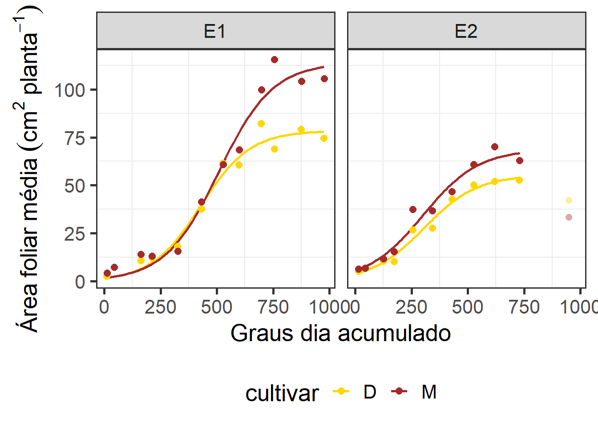
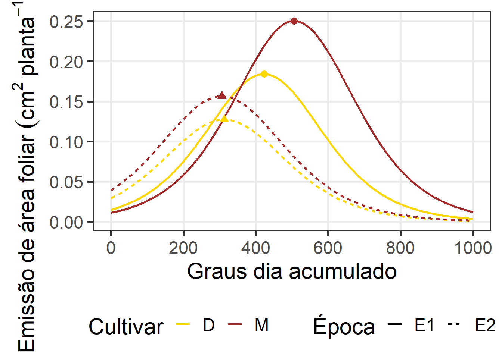

04: Modelagem da área foliar de cultivares de linho em diferentes épocas de semeadura utilizando o modelo Logístico
1 Libraries
To reproduce the examples of this material, the R packages the following packages are needed.
2 Data
2.1 Temperature
dft <-
import("data/clima.csv", dec = ",") |>
separate(hora, into = c("dia", "mes", "ano")) |>
unite("data", dia, mes, ano, sep = "/") |>
mutate(data = dmy(data))
dftemp <-
dft |>
group_by(data) |>
summarise(tmin = min(tmin),
tmed = mean(tmed),
tmax = max(tmax),
prec = sum(prec),
ur = mean(ur)) |>
mutate(gd = tmed - 5,
gd2 = ((tmax + tmin) / 2) - 5) |>
mutate(data = ymd(data))
dftempe1 <-
dftemp |>
slice(1:79) |>
mutate(epoca = "E1")
dftempe2 <-
dftemp |>
slice(79:148) |>
mutate(epoca = "E2")
dftemp2 <-
bind_rows(dftempe1, dftempe2) |>
relocate(epoca, .before = data) |>
group_by(epoca) |>
mutate(gda = cumsum(gd),
gda2 = cumsum(gd2)) |>
separate(data, into = c("ano", "mes", "dia")) |>
unite("data", dia, mes, sep = "/")
# GRAUS DIA
df
## function (x, df1, df2, ncp, log = FALSE)
## {
## if (missing(ncp))
## .Call(C_df, x, df1, df2, log)
## else .Call(C_dnf, x, df1, df2, ncp, log)
## }
## <bytecode: 0x000002bd27ddbed8>
## <environment: namespace:stats>2.2 gráfico densidade
library(ggridges)
dft |>
separate(data, into = c("ano", "mes", "dia")) |>
ggplot(aes(x = tmax, y = mes, fill = after_stat(x))) +
geom_density_ridges_gradient() +
scale_fill_viridis_c() +
labs(x = "Temperatura média (ºC)",
y = "Meses do ano",
fill = "Temperatura\nmédia (ºC)")2.3 Gráfico
ggplot() +
geom_bar(dftemp,
mapping = aes(x = data, y = prec * 30 / 100),
stat = "identity",
fill = "skyblue") +
geom_line(dftemp,
mapping = aes(x = data, y = tmax, colour = "red"),
linewidth = 1,
alpha = 0.1) +
geom_line(dftemp,
mapping = aes(x = data, y = tmin, colour = "blue"),
linewidth = 1,
alpha = 0.1) +
geom_smooth(dftemp,
mapping = aes(x = data, y = tmax, colour = "red"),
linewidth = 1,
se = FALSE) +
geom_smooth(dftemp,
mapping = aes(x = data, y = tmin, colour = "blue"),
linewidth = 1,
se = FALSE) +
scale_x_date(date_breaks = "15 days", date_labels = "%d/%m",
expand = expansion(c(0, 0)))+
scale_y_continuous(name = expression("Temperatura ("~degree~"C)"),
sec.axis = sec_axis(~ . * 100 / 30 , name = "Precipitação (mm)")) +
theme(legend.position = "bottom",
legend.title = element_blank(),
axis.text.x = element_text(angle = 45, vjust = 1, hjust = 1)) +
scale_color_identity(breaks = c("red", "blue"),
labels = c("Temperatura máxima (ºC)",
"Temperatura mínima (ºC)"),
guide = "legend") +
labs(x = "Dia do ano",
color = "") +
theme_bw(base_size = 16) +
theme(
panel.grid.major = element_blank(), #remove major gridlines
# panel.grid.minor = element_blank(), #remove minor gridlines
legend.background = element_rect(fill='transparent'), #transparent legend bg
legend.position = "bottom") #transparent legend panelggsave("figs/temperature.jpg",
width = 12,
height = 8)3 modelo
df_model <- import("data/df_model_cresc.xlsx")
formula <- af_planta ~ b1/(1 + exp(b2 - b3 * gda))
start_af = c(b1 = 60,
b2 = 6,
b3 = 0.02)
mod_af <-
df_model |>
filter(data != "04/11") |>
group_by(epoca, cultivar, bloco) |>
doo(~nls(formula,
data = .,
start = start_af))
parameters <-
mod_af |>
mutate(data = map(data, ~.x |> tidy())) |>
unnest(data) |>
select(epoca, cultivar, bloco, term, estimate) |>
pivot_wider(names_from = term,
values_from = estimate)4 ANOVA
# ANOVAS
mod_anova <-
mod_af |>
mutate(data = map(data, ~.x |> tidy())) |>
unnest(data) |>
select(epoca, cultivar, bloco, term, estimate) |>
rename(parameter = term) |>
group_by(parameter) %>%
doo(~aov(estimate ~ epoca*cultivar + bloco, data = .))
# TABELA ANOVA
tab_anova <-
mod_anova |>
mutate(data = map(data, ~.x |> tidy())) |>
unnest(data)
tab_anova
## # A tibble: 15 × 7
## parameter term df sumsq meansq statistic p.value
## <chr> <chr> <dbl> <dbl> <dbl> <dbl> <dbl>
## 1 b1 epoca 1 2.93e+3 2.93e+3 16.3 0.00686
## 2 b1 cultivar 1 1.66e+3 1.66e+3 9.21 0.0229
## 3 b1 bloco 2 5.79e+2 2.89e+2 1.61 0.276
## 4 b1 epoca:cultivar 1 2.42e+2 2.42e+2 1.34 0.291
## 5 b1 Residuals 6 1.08e+3 1.80e+2 NA NA
## 6 b2 epoca 1 6.67e+0 6.67e+0 33.2 0.00119
## 7 b2 cultivar 1 2.01e-1 2.01e-1 1.00 0.356
## 8 b2 bloco 2 8.91e-1 4.46e-1 2.22 0.190
## 9 b2 epoca:cultivar 1 3.95e-1 3.95e-1 1.96 0.211
## 10 b2 Residuals 6 1.21e+0 2.01e-1 NA NA
## 11 b3 epoca 1 3.29e-7 3.29e-7 0.0995 0.763
## 12 b3 cultivar 1 1.34e-7 1.34e-7 0.0406 0.847
## 13 b3 bloco 2 2.57e-5 1.29e-5 3.88 0.0828
## 14 b3 epoca:cultivar 1 1.22e-8 1.22e-8 0.00367 0.954
## 15 b3 Residuals 6 1.99e-5 3.31e-6 NA NA
# export(tab_anova, "data/result_logistico.xlsx", which = "anova_par")
# comparação de médias
mcomp_cult <-
mod_anova |>
mutate(data = map(data, ~.x |> emmeans(~cultivar)))
mcomp_epoca <-
mod_anova |>
mutate(data = map(data, ~.x |> emmeans(~epoca)))
# beta1
b1e <-
plot(mcomp_epoca$data[[1]], comparisons = TRUE, CIs = FALSE) +
labs(x = expression(beta[1]),
y = "Época") +
theme_bw(base_size = 14) +
xlim(c(60, 100))
b1c <-
plot(mcomp_cult$data[[1]], comparisons = TRUE, CIs = FALSE) +
labs(x = expression(beta[1]),
y = "Cultivar") +
theme_bw(base_size = 14)+
xlim(c(60, 100))
# beta2 (epoca)
b2e <-
plot(mcomp_epoca$data[[2]], comparisons = TRUE, CIs = FALSE) +
labs(x = expression(beta[2]),
y = "Época") +
theme_bw(base_size = 14)
arrange_ggplot(b1e, b1c, b2e,
ncol = 1,
tag_levels = "a")
ggsave("figs/anova_pars.jpg",
height = 5,
width = 4)4.1 Qualidade de ajuste
library(hydroGOF)
get_r2 <- function(model){
aic <- AIC(model)
fit <- model$m$fitted()
res <- model$m$resid()
obs <- fit + res
gof <- gof(obs, fit, digits = 4)
r2 <- gof[which(rownames(gof) == "R2")]
data.frame(aic = aic, r2 = r2)
}
qualidade <-
mod_af |>
mutate(map_dfr(.x = data,
.f = ~get_r2(.))) |>
select(-data)
# export(qualidade, "data/result_logistico.xlsx", which = "qualidade")5 Modelo ajustado
# área foliar
formula <- y ~ b1/(1 + exp(b2 - b3 * x))
# a <-
ggplot(df_model |> filter(!data %in% c("04/11")),
aes(gda, af_planta, color = cultivar)) +
geom_smooth(method = "nls",
method.args = list(formula = formula,
start = c(b1 = 60,
b2 = 2,
b3 = 0.02)),
se = FALSE,
aes(color = cultivar)) +
facet_wrap(~epoca) +
stat_summary(fun = mean,
geom = "point",
aes(color = cultivar),
size = 2.5,
position = position_dodge(width = 0.8)) +
scale_y_continuous(breaks = seq(0, 150, by = 25)) +
labs(x = "Graus dia acumulado",
y = expression(Área~foliar~média~(cm^2~planta^{-1}))) +
scale_color_manual(values = c("gold", "brown")) +
stat_summary(data = df_model |> filter(data == "04/11"),
aes(x = gda, y = af_planta),
fun = mean,
alpha = 0.4,
shape = 16,
show.legend = FALSE) +
theme_bw(base_size = 16) +
theme(
panel.grid.major = element_blank(), #remove major gridlines
# panel.grid.minor = element_blank(), #remove minor gridlines
legend.background = element_rect(fill='transparent'), #transparent legend bg
legend.position = "bottom") #transparent legend panel
ggsave("figs/mod_logistico.jpg",
width = 9,
height = 6)5.1 Primeira derivada
# primeira derivada
D(expression(b1/(1 + exp(b2 - b3 * das))), "das")
## b1 * (exp(b2 - b3 * das) * b3)/(1 + exp(b2 - b3 * das))^2
dy <- function(x,b1,b2,b3){
b1 * (exp(b2 - b3 * x) * b3)/(1 + exp(b2 - b3 * x))^2
}
parameters <-
parameters |>
mean_by(epoca, cultivar) |>
mutate(xpi = b2 / b3,
ypi = dy(xpi, b1, b2, b3)) |>
as.data.frame()
# plot_pi <-
ggplot() +
stat_function(fun = dy,
aes(color = "D", linetype = "E1"),
n = 500,
linewidth = 1,
xlim = c(0, 1000),
args = c(b1 = parameters[[1, 3]],
b2 = parameters[[1, 4]],
b3 = parameters[[1, 5]])) +
stat_function(fun = dy,
aes(color = "M", linetype = "E1"),
linewidth = 1,
xlim = c(0, 1000),
args = c(b1 = parameters[[2, 3]],
b2 = parameters[[2, 4]],
b3 = parameters[[2, 5]])) +
stat_function(fun = dy,
aes(color = "D", linetype = "E2"),
linewidth = 1,
xlim = c(0, 1000),
args = c(b1 = parameters[[3, 3]],
b2 = parameters[[3, 4]],
b3 = parameters[[3, 5]])) +
stat_function(fun = dy,
aes(color = "M", linetype = "E2"),
linewidth = 1,
xlim = c(0, 1000),
args = c(b1 = parameters[[4, 3]],
b2 = parameters[[4, 4]],
b3 = parameters[[4, 5]])) +
geom_point(aes(xpi, ypi, shape = epoca, color = cultivar),
data = parameters,
size = 3,
show.legend = FALSE) +
theme_bw(base_size = 16) +
scale_x_continuous(breaks = seq(0, 1200, by = 200)) +
labs(x = "Graus dia acumulado",
y = expression(Emissão~de~área~foliar~(cm^2~planta^{-1}~grau~dia^{-1})),
color = "Cultivar",
linetype = "Época") +
scale_color_manual(values = c("gold", "brown"))
ggsave("figs/prim_deriv.jpg",
height = 7,
width = 9)5.2 Segunda derivada
# segunda derivada
D(expression(b1 * (exp(b2 - b3 * x) * b3)/(1 + exp(b2 - b3 * x))^2), "x")
## -(b1 * (exp(b2 - b3 * x) * b3 * b3)/(1 + exp(b2 - b3 * x))^2 -
## b1 * (exp(b2 - b3 * x) * b3) * (2 * (exp(b2 - b3 * x) * b3 *
## (1 + exp(b2 - b3 * x))))/((1 + exp(b2 - b3 * x))^2)^2)
d2y <- function(x,b1,b2,b3){
-(b1 * (exp(b2 - b3 * x) * b3 * b3)/(1 + exp(b2 - b3 * x))^2 -
b1 * (exp(b2 - b3 * x) * b3) * (2 * (exp(b2 - b3 * x) * b3 *
(1 + exp(b2 - b3 * x))))/((1 + exp(b2 - b3 * x))^2)^2)
}
parameters <-
parameters |>
mutate(xmap = (b2 - 1.3170)/b3,
xmdp = (b2 + 1.3170)/b3,
ymap = d2y(xmap, b1, b2, b3),
ymdp = d2y(xmdp, b1, b2, b3),
)
# df_acel <-
ggplot() +
geom_hline(yintercept = 0) +
stat_function(fun = d2y,
aes(color = "D", linetype = "E1"),
n = 500,
linewidth = 1,
xlim = c(0, 1000),
args = c(b1 = parameters[[1, 3]],
b2 = parameters[[1, 4]],
b3 = parameters[[1, 5]])) +
stat_function(fun = d2y,
aes(color = "M", linetype = "E1"),
linewidth = 1,
xlim = c(0, 1000),
args = c(b1 = parameters[[2, 3]],
b2 = parameters[[2, 4]],
b3 = parameters[[2, 5]])) +
stat_function(fun = d2y,
aes(color = "D", linetype = "E2"),
linewidth = 1,
xlim = c(0, 1000),
args = c(b1 = parameters[[3, 3]],
b2 = parameters[[3, 4]],
b3 = parameters[[3, 5]])) +
stat_function(fun = d2y,
aes(color = "M", linetype = "E2"),
linewidth = 1,
xlim = c(0, 1000),
args = c(b1 = parameters[[4, 3]],
b2 = parameters[[4, 4]],
b3 = parameters[[4, 5]])) +
geom_point(aes(xmap, ymap, fill = cultivar),
data = parameters,
size = 3,
shape = 24,
show.legend = FALSE) +
geom_point(aes(xmdp, ymdp, fill = cultivar),
data = parameters,
size = 3,
shape = 25,
show.legend = FALSE) +
theme_bw(base_size = 16) +
labs(x = "Graus dia acumulado",
y = expression(Aceleração~de~emissão~área~foliar~(cm^2~planta^{-1}~grau~dia^{-2})),
color = "Cultivar",
linetype = "Época") +
scale_color_manual(values = c("gold", "brown")) +
scale_fill_manual(values = c("gold", "brown"))
ggsave("figs/seg_deriv.jpg",
height = 7,
width = 9)
# export(parameters, "data/result_logistico.xlsx", which = "parametros_logistico")6 Section info
sessionInfo()
## R version 4.2.2 (2022-10-31 ucrt)
## Platform: x86_64-w64-mingw32/x64 (64-bit)
## Running under: Windows 10 x64 (build 22621)
##
## Matrix products: default
##
## locale:
## [1] LC_COLLATE=Portuguese_Brazil.utf8 LC_CTYPE=Portuguese_Brazil.utf8
## [3] LC_MONETARY=Portuguese_Brazil.utf8 LC_NUMERIC=C
## [5] LC_TIME=Portuguese_Brazil.utf8
##
## attached base packages:
## [1] stats graphics grDevices utils datasets methods base
##
## other attached packages:
## [1] hydroGOF_0.4-0 zoo_1.8-12 ggridges_0.5.4 emmeans_1.8.7
## [5] broom_1.0.5 metan_1.18.0 lubridate_1.9.2 forcats_1.0.0
## [9] stringr_1.5.0 dplyr_1.1.2 purrr_1.0.1 readr_2.1.4
## [13] tidyr_1.3.0 tibble_3.2.1 ggplot2_3.4.2 tidyverse_2.0.0
## [17] rio_0.5.29
##
## loaded via a namespace (and not attached):
## [1] TH.data_1.1-2 minqa_1.2.5 colorspace_2.1-0
## [4] class_7.3-20 estimability_1.4.1 rstudioapi_0.15.0
## [7] proxy_0.4-27 farver_2.1.1 ggrepel_0.9.3
## [10] fansi_1.0.4 mvtnorm_1.2-2 mathjaxr_1.6-0
## [13] codetools_0.2-18 splines_4.2.2 knitr_1.43
## [16] polyclip_1.10-4 jsonlite_1.8.7 nloptr_2.0.3
## [19] ggforce_0.4.1 compiler_4.2.2 backports_1.4.1
## [22] Matrix_1.6-0 fastmap_1.1.1 cli_3.6.1
## [25] tweenr_2.0.2 htmltools_0.5.5 tools_4.2.2
## [28] lmerTest_3.1-3 coda_0.19-4 gtable_0.3.3
## [31] glue_1.6.2 Rcpp_1.0.11 cellranger_1.1.0
## [34] vctrs_0.6.3 nlme_3.1-160 lwgeom_0.2-13
## [37] xfun_0.39 openxlsx_4.2.5.2 lme4_1.1-34
## [40] timechange_0.2.0 lifecycle_1.0.3 MASS_7.3-60
## [43] scales_1.2.1 gstat_2.1-1 ragg_1.2.5
## [46] hms_1.1.3 parallel_4.2.2 sandwich_3.0-2
## [49] RColorBrewer_1.1-3 yaml_2.3.7 curl_5.0.1
## [52] reshape_0.8.9 stringi_1.7.12 maptools_1.1-7
## [55] e1071_1.7-13 boot_1.3-28 zip_2.3.0
## [58] intervals_0.15.4 rlang_1.1.1 pkgconfig_2.0.3
## [61] systemfonts_1.0.4 evaluate_0.21 lattice_0.20-45
## [64] sf_1.0-13 patchwork_1.1.2 htmlwidgets_1.6.2
## [67] labeling_0.4.2 tidyselect_1.2.0 GGally_2.1.2
## [70] hydroTSM_0.6-0 plyr_1.8.8 magrittr_2.0.3
## [73] R6_2.5.1 generics_0.1.3 automap_1.1-9
## [76] multcomp_1.4-25 DBI_1.1.3 pillar_1.9.0
## [79] haven_2.5.3 foreign_0.8-83 withr_2.5.0
## [82] mgcv_1.8-41 stars_0.6-1 units_0.8-2
## [85] xts_0.13.1 abind_1.4-5 survival_3.4-0
## [88] sp_2.0-0 spacetime_1.3-0 KernSmooth_2.23-20
## [91] utf8_1.2.3 tzdb_0.4.0 rmarkdown_2.23
## [94] grid_4.2.2 readxl_1.4.3 data.table_1.14.8
## [97] FNN_1.1.3.2 classInt_0.4-9 digest_0.6.33
## [100] xtable_1.8-4 numDeriv_2016.8-1.1 textshaping_0.3.6
## [103] munsell_0.5.0 viridisLite_0.4.2